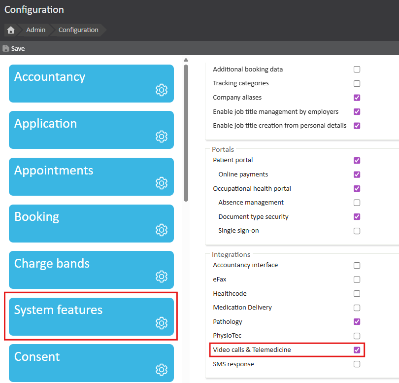
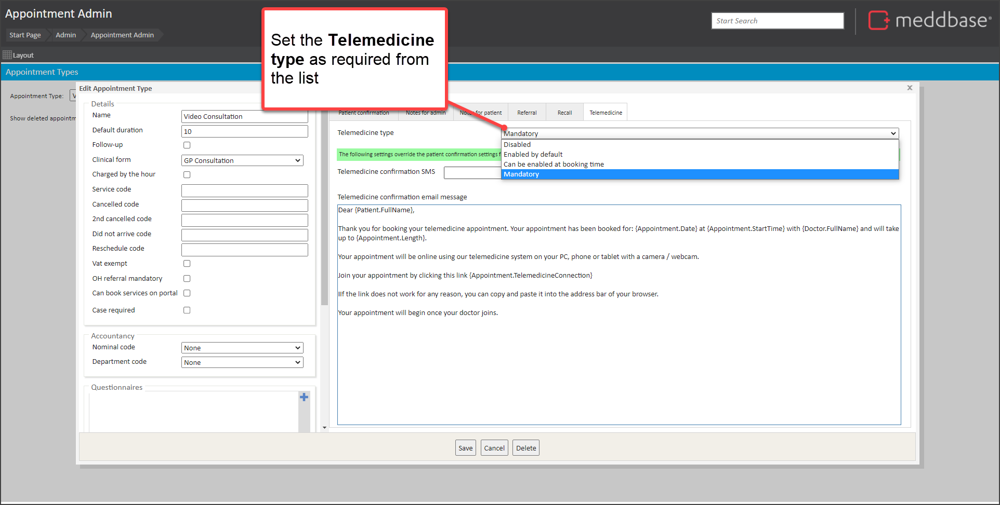
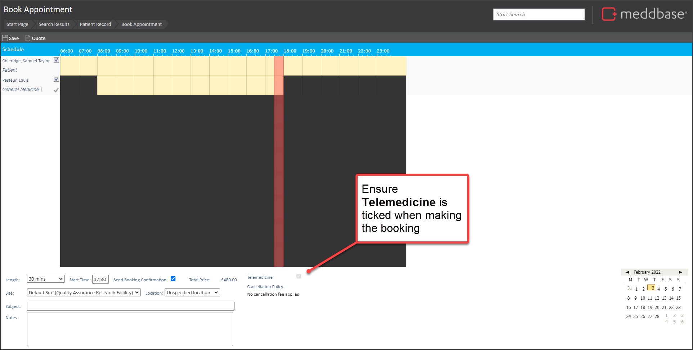

Meddbase integrates with Twilio video to deliver a simple and smooth Telemedicine appointment experience for all participants, both clinicians and patients.
All underpinned by the flexible appointment management tools within Meddbase to schedule and provide joining instructions.
This article outlines the key features you have available to schedule Telemedicine appointments using Twilio:
How to join and use Telemedicine Video features is explained in the separate article How to join Telemedicine appointments and use Twilio video features - for Clinicians.
There is a one-off group of set-up activities you’ll need to carry out, in conjunction with our Meddbase to Customer Services team.
First of all, you'll need to ensure the Telemedicine feature is activated. To do this:

Next, the one-off Twilio telemedicine account configuration will need to be completed. To do this, please contact your account manager (or email accountmanagement@meddbase.com).
They will then organise the work for our internal teams to set up Telemedicine integration for each of your chambers where it is needed.
To do this:

For reference, our standard template text is shown below.
Dear {Patient.FullName}, Thank you for booking your telemedicine appointment. Your appointment has been booked for: {Appointment.Date} at {Appointment.StartTime} with {Doctor.FullName} and will take up to {Appointment.Length}. Your appointment will be online using our telemedicine system on your PC, phone or tablet with a camera / webcam. Join your appointment by clicking this link {Appointment.TelemedicineConnection} If the link does not work for any reason, you can copy and paste it into the address bar of your browser. Your appointment will begin once your doctor joins. |
This telemedicine confirmation email is key to the process. Since the code in this template {Appointment.TelemedicineConnection} is key to sending the telemedicine link to the patient to enable them to join.
6. Then Save the changes
From here, to make the Telemedicine Appointment available:
This process is similar to other appointment bookings as described in the article
The key action in the process is to ensure that the Telemedicine option is ticked in the Book appointment screen when making the booking.

This will then send the appointment confirmation with the correct email and the joining link for the patient.
It will also enable the clinician to join the telemedicine appointment.